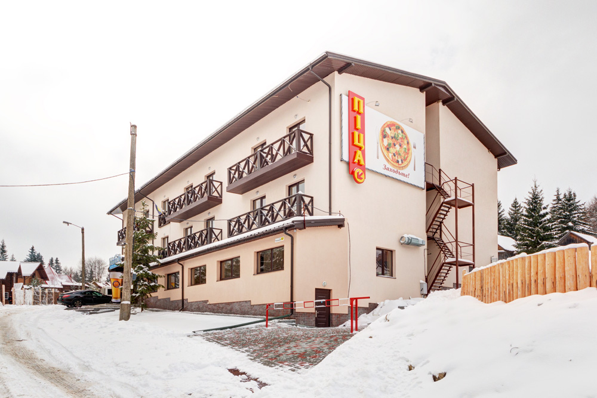
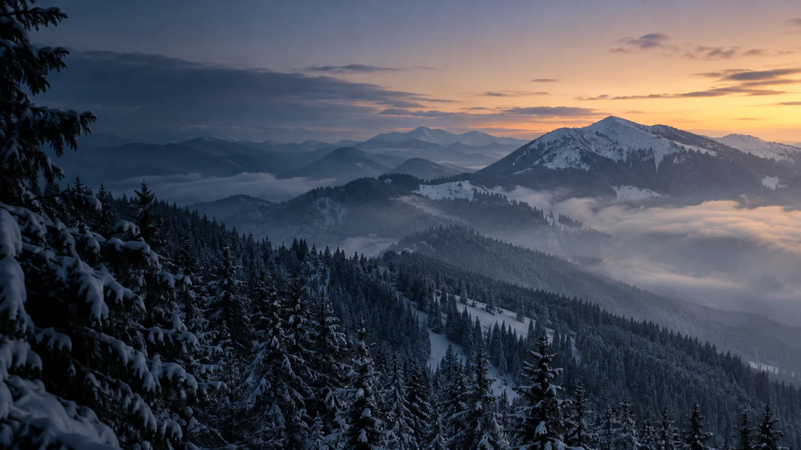
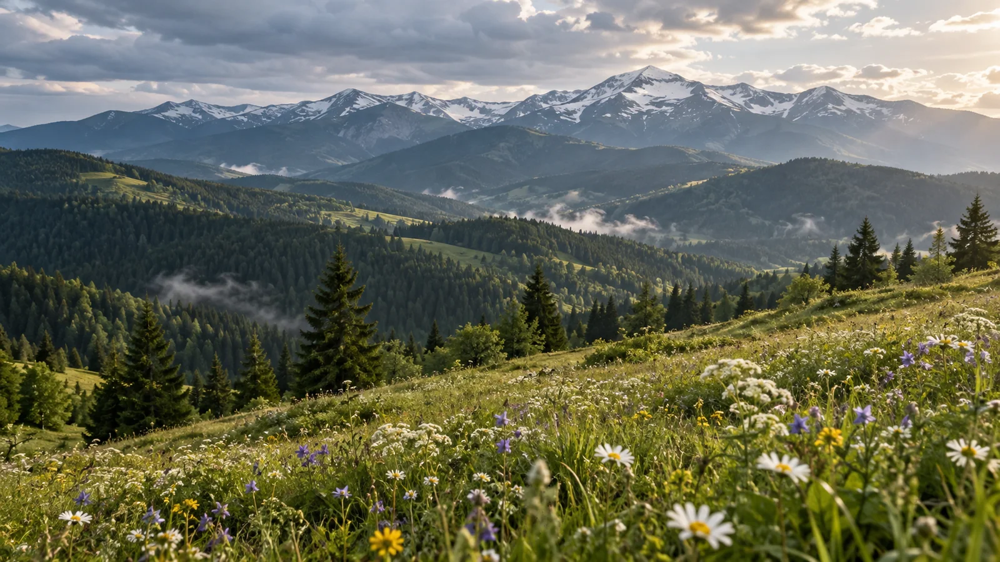
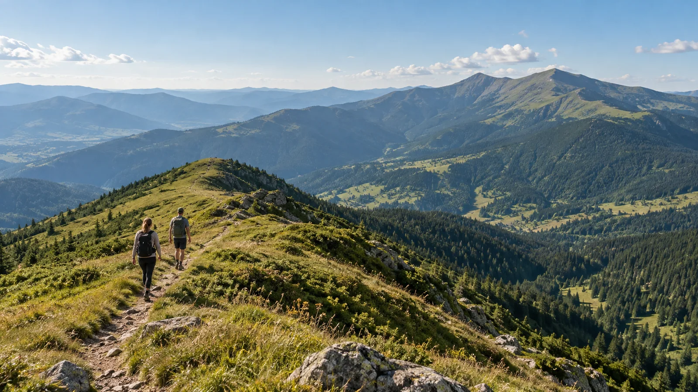
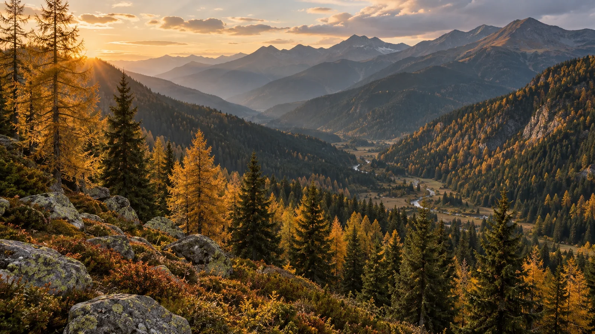
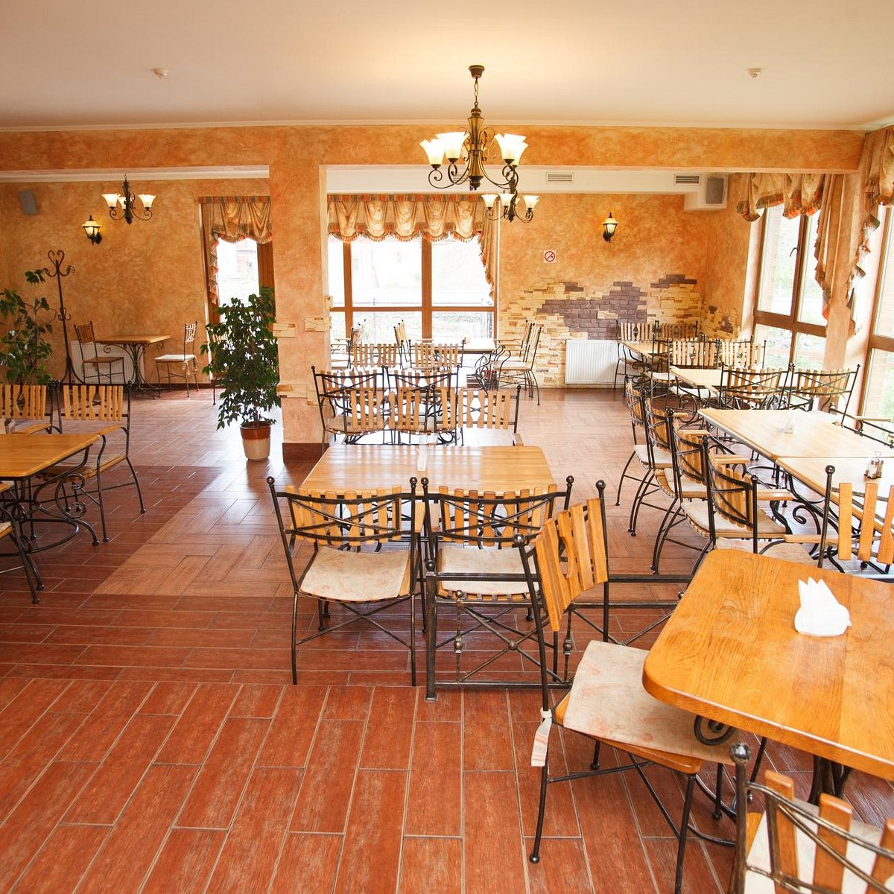

01 · ПОЛЯНИЦЯ
01 · ПОЛЯНИЦЯ
ЛОКАЦІЯ 01
Буковель
Ближче до подій
- Близько 50 м до витягу 1R · за описом готелю
- 960 м над рівнем моря · за сайтом готелю
- SPA та ресторан-пивоварня
- Прокат і сервіс спорядження
ГОРИ. ЛЮДИ. БІЛЬШЕ ВРАЖЕНЬ
SkiLandHouse, два особливі місця в серці Українських Карпат. Ближче до природи, ближче до себе.
Обрати готель →
△ БуковельБлижче до подій

♧ ЯблуницяБлижче до тишіДВА СТИЛІ ВІДПОЧИНКУ
ОДНА ВЕЛИКА ЛЮБОВ ДО ГІР
Буковель і Яблуниця різні за ритмом, але однаково особливі. Обирайте свій формат відпочинку та відкривайте Карпати у власному стилі.
Дізнатися більше про наші локації →01 · ПОЛЯНИЦЯ
ЛОКАЦІЯ 01
Ближче до подій
ЛОКАЦІЯ 02
Ближче до тиші
Фото готелів та інтер’єру взяті з офіційних і туристичних сторінок, показані лише в локальному демо; права на повторне використання потрібно підтвердити.
КАРПАТИ У РИТМІ СЕЗОНІВ
Кожна пора року в Карпатах особлива. Обирайте свій сезон і відкривайте нові враження разом зі SkiLandHouse.

ЗимаЛижі, сніг, драйв→
ВеснаПрирода оживає→
ЛітоГори та природа→
ОсіньКольори Карпат→Сезонні краєвиди згенеровані й не є документальними фото конкретного місця.

СМАКИ. ТРАДИЦІЇ. АТМОСФЕРА
У Буковелі, ресторан-пивоварня. У Яблуниці, піцерія з піччю на дровах і камінний лобі-бар.
Дізнатися більше → Ресторан-пивоварня SkiLandHouse · фото з TripadvisorСПЛАНУЙТЕ СВІЙ ВІДПОЧИНОК
Оберіть готель, дати та кількість гостей, побачите приклад наступного кроку.
ПРО МЕРЕЖУ · ДВА МІСЦЯ В КАРПАТАХ
Мережа об’єднує два відпочинкові комплекси: біля курорту Буковель у Поляниці та в Яблуниці. У першому, SPA, прокат і ресторан-пивоварня; у другому, піцерія з дров’яною піччю, лобі-бар із каміном і баня на дровах.
Офіційний сайт зазначає 2006 рік як початок бренду. Це не дата відкриття кожного готелю.